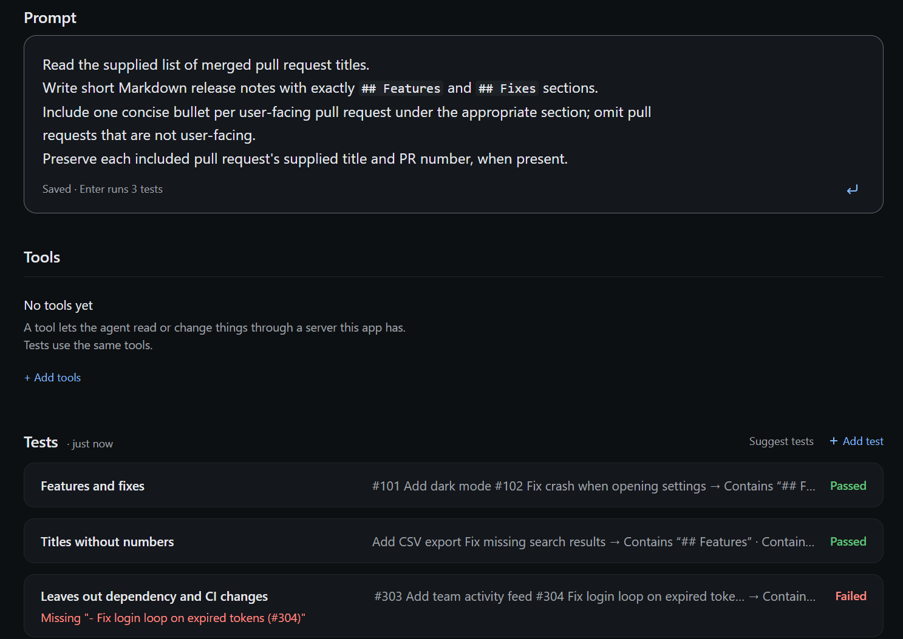
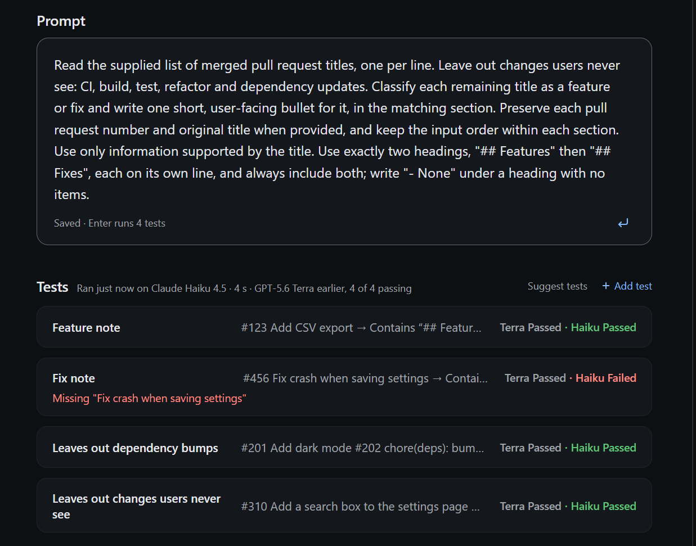

For Copilot custom agents
Know your agent works before you share it.
Add a few examples of what a good answer looks like and press Enter. kmx runs them in the Copilot app, shows what broke and why, and lets you compare models and replay tool calls. Change the prompt, press Enter again.

The loop, inside the app you already write in
01
Enter reruns every test
Edit the prompt and press Enter. Results come back in seconds, each with the reason it passed or failed.
02
Two models, side by side
Run the same tests on a second model and see where they differ before you switch.
03
Tool calls recorded once
Choose Recorded for a test's tool to save its first result and replay it on later runs. Live tools run every time.

IN PROGRESS
The same file in your terminal and CI
Your agent stays a GitHub .agent.md file with its tests beside it. Run them from the terminal or in a pull request; a failure reads the same as in the canvas.
PLANNED
Ship the agent you tested
Package the exact version that passed and deploy it to Kubernetes or AKS.
PLANNED
Results that stay
Test results you can come back to after closing the canvas, and share with your team.
Install
You need the Copilot app and CLI and a signed-in Copilot account. On Windows, kmx runs in WSL. Sign in separately for kmx model access in WSL or your Mac terminal.
1. In WSL (or a macOS terminal), install kmx
curl -fsSL https://raw.githubusercontent.com/kaimahi-agents/kaimahi/[VERSION]/install.sh | sudo sh -s -- --version=[VERSION] --bin-dir=/usr/local/bin2. Add the plugin to Copilot
Windows terminal (not WSL)
copilot plugin marketplace add kaimahi-agents/kaimahi
copilot plugin install kmx-agent-builder@kmx-pluginsmacOS terminal
copilot plugin marketplace add kaimahi-agents/kaimahi
copilot plugin install kmx-agent-builder-path@kmx-plugins3. In the Copilot app, ask for an agent
Create an agent that turns merged pull request titles into release notes.